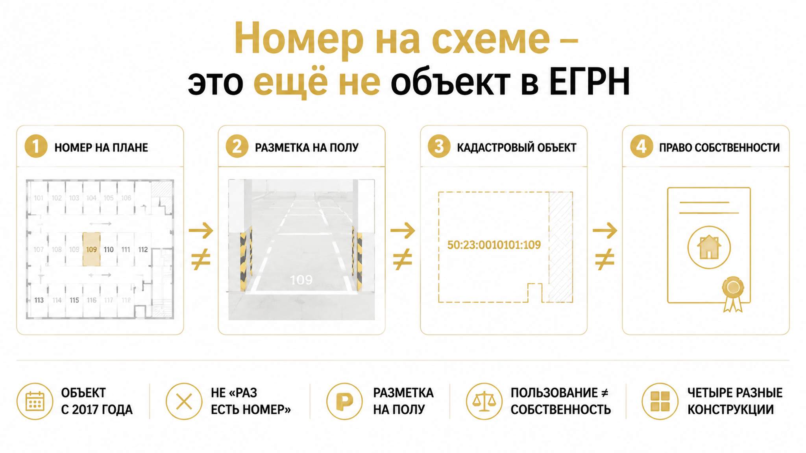

За два дня до аванса покупатели заказали выписку — и не на квартиру, а на машино-место. Квартира была чистой: собственник один, обременений нет, документы ровные, история переходов вопросов не вызывала. Парковку продавец обещал «в подарок»: номер обведён маркером на схеме паркинга, строка вписана в приложение к договору. А в ЕГРН права продавца на это место не оказалось. Аванс не внесли, комплект «квартира плюс парковка» рассыпался прямо на столе, покупку развели на две отдельные истории. Разбираю этот casus как собирательный — без адреса, фамилий, названия ЖК и сумм: механика в Тюмени повторяется, фактура каждый раз чужая.
Я Святослав Шакин, The Риэлтор, Тюмень. Если вам обещают машино-место «в подарок» или «в комплекте» — напишите до аванса, проверю объект по ЕГРН вместе с квартирой: Telegram или MAX.
Начинается всё мирно: квартира нравится, торг идёт тяжело, продавец достаёт аргумент «машино-место в подарок» или «в комплекте», показывает схему с номером и обещает пропуск после сделки. В нашем casus номер попал в приложение к договору — покупатели прочитали это как подтверждение права. Аванс назначили через несколько дней, и вся энергия ушла на проверку квартиры. Парковка осталась в статусе «бонус, там всё понятно».
Вот здесь и стоит первая ловушка. «Машино-место в подарок» — это маркетинговый ход: скидка, аргумент в торге, жест доброй воли. Он не заменяет ни отдельный договор, ни государственную регистрацию перехода права.
Номер на схеме и строка в приложении описывают намерение продавца. Не запись в Едином государственном реестре недвижимости. Пока в ЕГРН нет объекта с кадастровым номером и записи о праве конкретного человека, обещание остаётся обещанием — даже искреннее, даже от продавца, который сам уверен, что место «его».
И отдельная беда — цена. За парковку в таких сделках обычно не назначают отдельную стоимость: она «внутри» цены квартиры или подана как уступка. Потом невозможно даже посчитать, сколько именно потерял покупатель: в договоре нет строки, к которой цепляется претензия. Деньги за «комплект» не возвращаются автоматически только потому, что парковка осталась неоформленной.
Перелом случился из-за одного простого действия. Покупатели заказали выписку не на квартиру, а на машино-место.
До этого проверка шла по привычному маршруту: выписка по квартире, история переходов, семейное положение продавца, обременения. Всё сошлось — и именно это усыпило внимание. Чистая квартира создаёт ощущение, что чистая вся сделка. Ощущение обманчивое.
Машино-место с 1 января 2017 года может быть самостоятельным объектом недвижимости. У самостоятельного объекта есть кадастровый номер, площадь и индивидуально определённые границы — они описаны технической документацией: технический план, координаты характерных точек. В ЕГРН вид объекта должен соответствовать именно машино-месту, а не только доле в праве на помещение паркинга.
То есть у парковки своя карточка в реестре. Своя история. Свой собственник. И проверяется она отдельным запросом, а не «заодно» с квартирой.
Покупатели вышли на этот запрос за два дня до аванса. По сути — на последнем рубеже, когда деньги ещё не ушли и обязательства не подписаны. У меня была похожая развилка в сделке, где проверка за два дня до аванса вскрыла скрытый риск, о котором продавец и сам не подозревал.
Правило простое: пока аванс не внесён, любая новость — это информация. После аванса та же новость становится проблемой с деньгами.
Спрашивали они конкретно. Есть ли у обещанного места кадастровый номер. Кто указан собственником. Совпадает ли этот собственник с продавцом квартиры. Нет ли ограничений. Не «а всё ли хорошо с паркингом» — а по объекту, а не по ощущениям.
Ответ реестра оказался не «место занято» и не «сделка запрещена». Он оказался хуже по последствиям: подтверждённого права продавца на конкретное машино-место в ЕГРН не нашлось.
Такие расхождения бывают разной природы. Место может быть вообще не выделено как самостоятельный объект и существовать только разметкой на полу и строкой во внутренних правилах паркинга. Собственником по реестру может значиться другое лицо — управляющая организация, застройщик, третий человек. Иногда помещение паркинга целиком в общей долевой собственности, а конкретные места распределены соглашениями, но в натуре не выделены. А иногда записи о праве просто нет: объект в реестре не зарегистрирован.
Я специально не утверждаю, какой вариант был в нашем casus. Важно другое: продавец не может передать имущество, которым сам документально не владеет. Гражданский кодекс здесь прямолинеен — статьи 209 и 223 ГК РФ увязывают распоряжение вещью с правом собственности и моментом его возникновения.
Право пользоваться местом по договорённости с УК, по пропускной системе, по «сложившемуся порядку» — это не право собственности. И не предмет купли-продажи недвижимости.
Финал такой. Аванс не внесён. Комплект «квартира плюс машино-место» не состоялся в том виде, в каком его обещали. Покупатели разделили сделки: квартиру оформлять отдельно и по своему графику, парковку рассматривать только после того, как появятся кадастровый номер и подтверждённое право продавца. Продавец остался с квартирой, которую всё ещё можно продать, и с бонусом, который он больше не может выкладывать на стол переговоров.
Реестр здесь не придирался. Он честно показал границу возможного. У меня был случай, где Росреестр не подтвердил сделку из-за расхождения документов и фактического состояния объекта — только там расхождение вскрылось уже после денег. Здесь — до них. Вся разница: одна выписка и два дня внимания.

Теперь главное недопонимание всей этой истории.
Машино-место с 1 января 2017 года может быть самостоятельным объектом недвижимости. Ключевое слово — «может». Не «является автоматически», не «раз есть номер, значит объект».
Чтобы место действительно стало объектом, у него должны быть кадастровый номер, площадь и индивидуально определённые границы. Границы описываются в технической документации: технический план, координаты характерных точек. То есть объект существует не потому, что его видно глазами, а потому, что он описан и учтён.
Обычный покупатель смотрит на паркинг и видит место. Разметка на полу, цифра на стене, шлагбаум, пропуск. «Вот же оно, стоит машина соседа, всё работает». Профи в этот момент смотрит не на пол, а в реестр — и часто видит там пустоту.
«Я тут четыре года стою, все знают, что место моё» — фраза честная. И юридически нулевая. Право пользоваться местом по внутренним правилам дома и право собственности на конкретное место — две разные вещи. Владение квартирой само по себе тоже не даёт права на конкретное место в паркинге, каким бы логичным это ни казалось.
За словом «машино-место» в Тюмени прячутся минимум четыре разные конструкции, и путать их нельзя:
В выписке вид объекта должен соответствовать именно машино-месту, а не доле в помещении или паркингу целиком. Если место в общей долевой собственности и не выделено в натуре, продать его отдельным объектом нельзя — сначала выдел. Порядок обновил Федеральный закон № 403-ФЗ от 23 ноября 2024 года: кадастровый инженер, техническая документация, уведомление сособственников, а по разъяснению регионального Росреестра — 30 дней на возражения. Если возражения поступили и договориться не вышло, дорога одна — суд.
Это не история «оформим за неделю до сделки».
И ещё одна ловушка — статистика. За 2025 год в Тюменской области на кадастровый учёт поставили 7 081 машино-место, цифру приводил региональный Росреестр. Красивое число, и его любят предъявлять как аргумент: «видите, у нас всё оформляют». Оформляют. Но семь тысяч учтённых мест и одно неучтённое — вещи полностью совместимые. Право подтверждает не статистика по региону, а выписка на конкретный объект.
Логика та же, что в другом тюменском случае, который я разбирал: когда документы расходятся с фактическим состоянием объекта, регистратор смотрит в документы, а не на то, как всё выглядит на месте. Обещания, схемы и договорённости на кухне в этой системе координат просто не считываются.
Дальше рабочая часть, к которой я свожу любую сделку с парковкой.
До аванса нужна отдельная выписка ЕГРН именно на машино-место. Не расширенная выписка на квартиру. Не «мы же смотрели документы, там всё чисто». Отдельный объект — отдельная выписка. Один запрос и пара дней ожидания против суммы, которую в паркинге теряют целиком.
Что я в этой выписке сверяю:
Приложение к договору со схемой паркинга ничего из этого не заменяет. Схема — описание договорённости между людьми. Выписка — описание объекта в государственном реестре. Пока нет второго, первое остаётся обещанием.
Отдельно про цену: когда парковка «в подарок», отдельной стоимости в договоре обычно нет — и потом непонятно, что именно вы потеряли. У каждого объекта должна быть своя цена, даже если по итогу договорились на скидку.
Самая устойчивая иллюзия покупателя — что «квартира с машино-местом» это один товар. Юридически это два объекта, два набора документов и, как правило, два перехода права.
| Что смотрим | Квартира | Машино-место |
|---|---|---|
| Существование объекта | Практически всегда учтена, кадастровый номер есть | Может быть учтено, может быть долей, может быть не оформлено вовсе |
| Выписка ЕГРН | Одна, на квартиру | Своя, на конкретное место |
| Границы | Помещение с планом | Технический план, координаты характерных точек |
| Собственник | Продавец по правоустанавливающим документам | Продавец, застройщик, управляющая организация, третье лицо или несколько сособственников |
| Полномочия представителя | Доверенность на продажу квартиры | Нужно прямое указание на распоряжение машино-местом |
| Обременения | По своей выписке | Проверяются отдельно, могут отличаться |
| Документ на сделку | Договор купли-продажи квартиры | Отдельный договор или отдельный предмет в договоре |
| Что бывает при непорядке | Сделку приостанавливают до устранения | Право может не перейти вообще: объекта юридически нет |
Отсюда вывод, ради которого всё это и пишется. «Машино-место в подарок» — маркетинговый бонус, скидка, аргумент в торге. Обещание может быть искренним, продавец может быть уверен, что место его. Но подарок не заменяет ни договор, ни государственную регистрацию перехода права. Нет отдельного кадастрового номера и записи о праве — покупатель получает не собственность, а надежду и краску на полу.
И жёсткая рамка сверху: продавец не может передать имущество, которым сам не владеет. Статьи 209 и 223 Гражданского кодекса читаются буквально, и никакая щедрость их не обходит. Оплата сама по себе права тоже не создаёт — я разбирал тюменский случай, где бумага между людьми была, а права и денег в итоге не оказалось. С парковкой механика та же. Только сумма меньше — и проверку чаще ленятся делать.
Первая реакция почти всегда одинаковая: «Ну давайте всё-таки внесём аванс, а с местом продавец потом разберётся, он же обещал».
Это худший вариант из всех. После аванса вы уже сторона со связанными руками, а вопрос о праве на машино-место так и висит в воздухе. Правильная последовательность обратная: сначала объект и право, потом деньги. И заметьте — «сделка не состоялась» и «сделку пересобрали» это разные вещи. Здесь второе.
Что имеет смысл сделать, когда выписка не подтвердила право продавца на место:
И отдельно про деньги. Аванс не возвращается сам собой только потому, что парковка оказалась неоформленной — всё упирается в то, что вы подписали, как назвали платёж и как описан предмет сделки. Поэтому проверка до денег всегда дешевле переговоров после. Ту же механику я разбирал в тюменской истории, где расписку написали, а денег на счёте не оказалось: бумага фиксирует договорённость между людьми, но права она не создаёт.
Машино-место «в подарок» — достаточно ли обещания в договоре или нужно требовать выписку из ЕГРН до аванса? Напишите в комментариях, как поступили бы вы: подписали бы комплект со ссылкой на схему паркинга или развели бы сделки. Мне правда интересно, где у тюменских покупателей проходит эта граница.
Сомневаетесь, что именно вам показывают в выписке — пришлите документы до аванса, посмотрю вместе с вами.
Telegram: @Tyumen_Rieltor · MAX: написать в MAX
Дальше в разговоре обычно появляется козырь: «сейчас же регистрируют за день». Формально верно: при полном комплекте документов регистрация по ДКП может занять не более одного рабочего дня (218-ФЗ, п. 15 ч. 1 ст. 16). Но скорость работает там, где нечего исправлять — объект уже на учёте, право продавца уже в реестре. Разметка на полу, доля в натуре и чужое место ускоренная процедура не создаёт.
Два соседних сюжета про то же самое. Когда ипотеку одобрили, а регистрацию остановила одна строка в ЕГРН, дело было не в сроках, а в содержании реестра. И когда Росреестр отказал в регистрации из-за расхождения документов с фактическим состоянием квартиры, регистратор смотрел в документы, а не на намерения сторон.
Статистика по региону тоже не спасает: семь тысяч учтённых мест и одно неучтённое совместимы. Право подтверждает выписка на конкретный объект.
И вот что в этом casus сделано правильно. Покупатели не убежали от квартиры и не устроили сцену. Они просто перестали платить за то, чего нет в реестре: аванс не внесли, комплект не подписали, сделки развели — квартира отдельно, парковка после кадастрового номера и записи о праве. Потеряли два дня и одну выписку. Не потеряли деньги за объект, который им никто не мог передать.
Вторичку в Тюмени покупают спокойно, и паркинги в новых домах у нас реально оформляют как самостоятельные объекты. Разница между хорошей сделкой и неприятным сюрпризом — один шаг: отдельная выписка на машино-место до денег, а не после. Один запрос, одна сверка кадастрового номера и собственника. Дальше «подарок» либо становится вашим объектом, либо остаётся чужой краской на полу — но уже не за ваш счёт.
Материал проверен: Святослав Шакин, личный риэлтор в Тюмени. Ориентир для покупателя, не индивидуальная юридическая консультация.